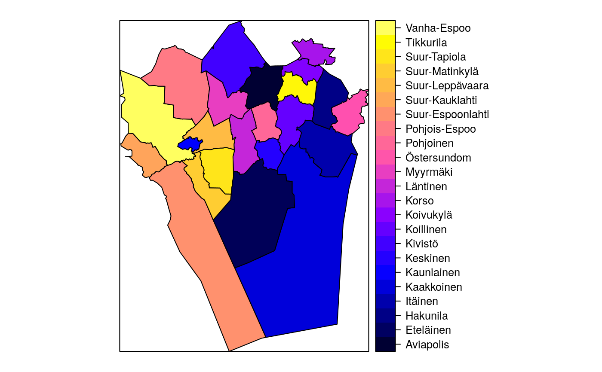

R/helsinki_spatial.R
get_helsinki_aluejakokartat.RdRetrieves District Boundaries data (Aluejakorajat, Aanestysalueet) from Helsinki Real Estate Department (Helsingin kaupungin kiinteistovirasto, HKK) through the HKK website http://ptp.hel.fi/avoindata/index.html
The data (C) 2011 Helsingin kaupunkimittausosasto.
get_helsinki_aluejakokartat(map.specifier = NULL, data.dir = tempdir(), verbose = TRUE)
| map.specifier | A string. Specify the name of the Helsinki District Boundary data set to retrieve. Run 'get_helsinki_aluejakokartat()' to see available options. |
|---|---|
| data.dir | A string. Specify a temporary folder for storing downloaded data. |
| verbose | logical. Should R report extra information on progress? |
a spatial object (from SpatialPolygonsDataFrame class)
See citation("gisfin")
sp.suuralue <- get_helsinki_aluejakokartat(map.specifier="suuralue");#>#>#>#>#> OGR data source with driver: LIBKML #> Source: "/tmp/RtmpPdjRNL/PKS_suuralue.kml", layer: "pks_suuralue" #> with 23 features #> It has 18 fields#> Warning: p4s= argument given as: +init=epsg:4258 #> and read as: +proj=longlat +datum=WGS84 +no_defs #> read string overridden by given p4s= argument value#> Warning: Z-dimension discarded#> #>spplot(sp.suuralue, zcol="Name");